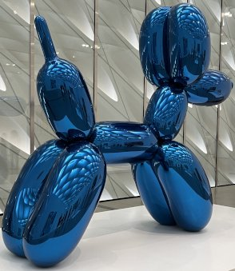

Balloon Dog (Blue)
Jeff Koons · 1994–2000 · Mirror-polished stainless steel with transparent color coating · 307.3 × 363.2 × 114.3 cm · The Broad, Los Angeles
In copyright. Look and learn: shown for study, not for download. · Photo: Another Believer, CC BY-SA 4.0
Koons conceived his Celebration series in 1994, with each sculpture in five colour versions; this dog also exists in magenta, yellow, orange and red. He meant to finish the series for a 1996 show at the Guggenheim in New York, which was cancelled after production delays and cost overruns. Collectors, Eli Broad among them, and dealers paid for the steel to be fabricated at Carlson & Company in Southern California, partly by selling works before they were made. The sculpture is dated 1994 to 2000 and is about three metres high.